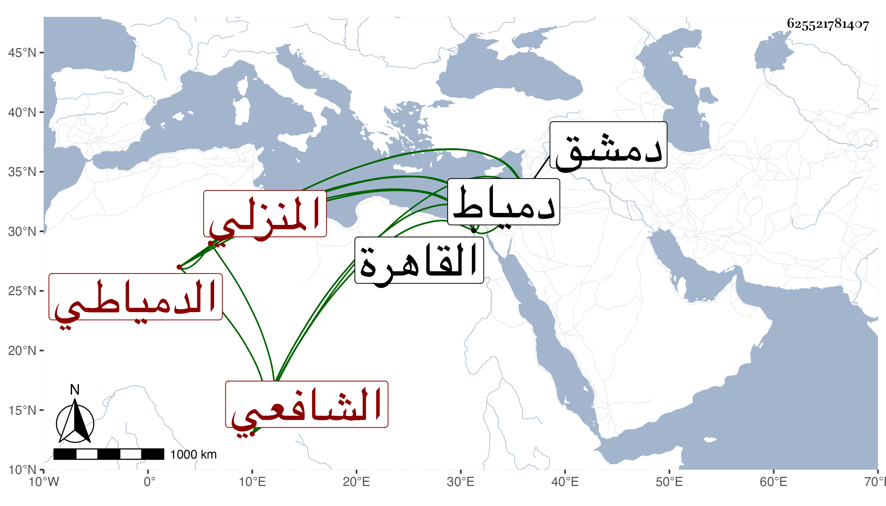

0902Sakhawi.DawLamic.ITO20230111-ara1.EIS1600.625521781407
Biography ID: 625521781407
650
محمد بن سليمان بن داود بن محمد بن داود البدر أبو المكارم بن العلم أبي الربيع المنزلي الأصل الدمياطي الشافعي نزيل القاهرة وخطيب القجماسية المستجدة بها . ولد في منتصف رجب سنة ثمان وأربعين وثانمائة بدمياط ونشأ بها فحفظ القرآن والمنهاج والتمهيد للأسنوي وألفية ابن ملك وفصيح ثعلب وأخذ عن أبيه وحج في سنة ثلاث وستين من البحر وجاور نحو ثلاثة أشهر ولازم في القاهرة الجوجري بحيث قرأ عليه المنهاج وسمعه أيضا مع التنبيه في التقسيم بل تفهم منه المنهاج الأصلي وألفية النحو وأذن له في الافتاء والتدريس وأرخ ذلك بشعبان سنة خمس وثمانين ، واستقر بعد أبيه في تدريس الناصرية بدمياط وكذا في نظرها ونظر المسلمية وبعد موت النابلسي في مشيخة قراقوش بخان السبيل وفي خطابة القجماسية أول ما فتحت . وانعزل عن الناس مع يبس وفاقة وديانة ومزيد تحر بحيث لا يأكل عند أحد من الأمراء ونحوهم غالبا شيئا ، وقد لخص الأغاني لأبي الفرج الأصبهاني ، وكان يتردد إلي بسببها ويستحضر منها ومن أشباهها فوائد يذاكر بها ، وآل أمره إلى أن رغب عن الخطابة للخطيب الوزيري ثم سافر في أثناء سنة خمس وتسعين لزيارة دمشق فاستعاد وظيفته .
